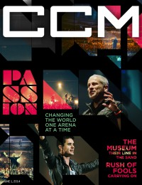

CCM Digital
1 Jun 2014
| Cover |
|---|
|  |
 Online Exclusively Online Exclusively |
| Writers in this Issue |
| Argyrakis, Andy Aspinwall, Grace S. Batterson, Matt Conner, Matt Greer, Andrew Lusk, Caroline Riddle, Melissa Saraco, Bert |
Passion Band
Cover Feature:- "Passion: Changing the World One Arena at a Time" by Caroline Lusk
- "Their Line in the Sand" by Caroline Lusk
- "Carry On" by Grace S. Aspinwall
- "Chapter New" by Melissa Chalos
- "The Heart of a Champion: Beckah Shae Reveals Hers" by Matt Conner
- "Broken and Bold" by Andy Argyrakis
- "The American Bible Challenge: Season 3 Kicks off With Kirk!" by Caroline Lusk
- Carman - No Plan B by Andy Argyrakis
- Mikeschair - All or Nothing by Matt Conner
- Passion Band - Take It All by Andrew Greer
- Fellowship Creative - Running to Follow by Grace S. Aspinwall
- The Museum - What We Stand For by Grace S. Aspinwall
- Seventh Day Slumber - We are the Broken by Bert Saraco
- The Monks - We are the Monks by Grace S. Aspinwall
- Kye Kye - Fantasize by Matt Conner
- KB - 100% by Andrew Greer
- various artists - Gospel Praise Duets: Many Voices, One Message by Andy Argyrakis
- The Oak Ridge Boys - Boys Night Out by Andy Argyrakis
- Celtic Woman - Emerald: Musical Gems by Andy Argyrakis
- "We Are Brave Tour, Wire / Berwyn, IL" by Andy Argyrakis
- "Praying the Promises" by Matt Batterson
- "Iphone Only" by Caroline Lusk
© 2011 CMnexus. Last updated May 2025. Contact: editor -AT- cmnexus -DØT- org